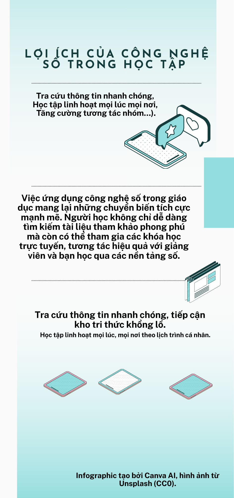

Nhiệm vụ 2.2: Infographic và video
Infographic dưới đây trình bày nội dung trực quan của bài tập. Xem video để tham khảo thêm.
Infographic

Infographic dưới đây trình bày nội dung trực quan của bài tập. Xem video để tham khảo thêm.
